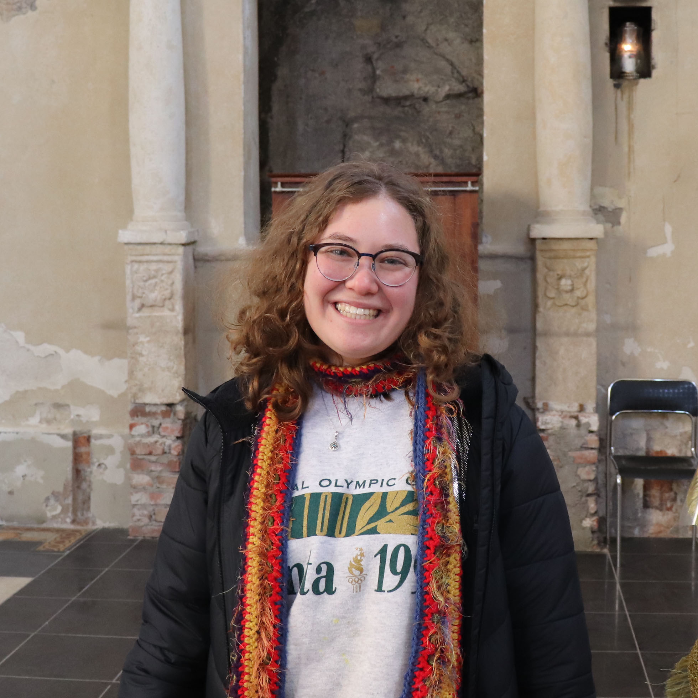
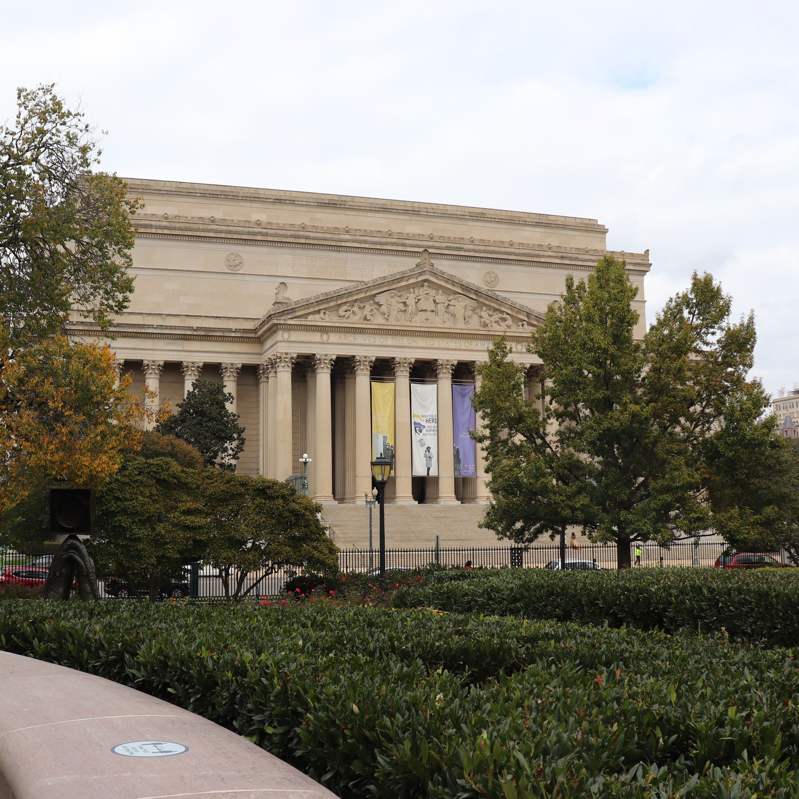
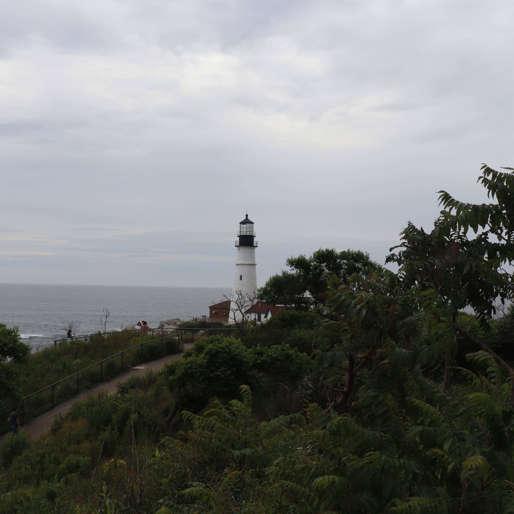
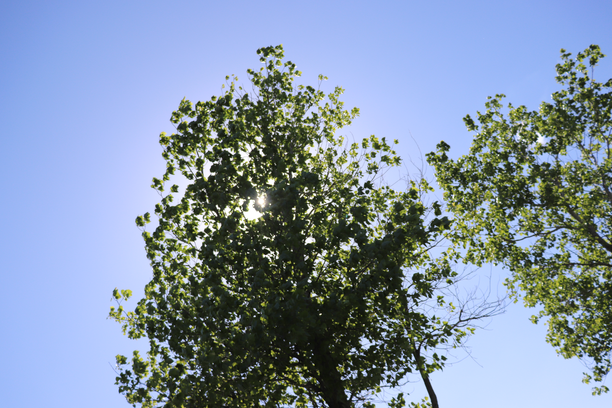

Ilana Williams graduated from the Philip Merrill College of Journalism. B.A. in journalism and B.S. in Environmental Science and Policy. She is familiar with reporting on local news in topics like sustainability and city development.
After graduating, Ilana worked for the Las Vegas Sun based in Las Vegas. She covered news about the environment at the state, local and community level. Stories were about water resource programs, drought management, nature and wildlife and air quality and extreme heat.


I look forward to talking with you soon!
